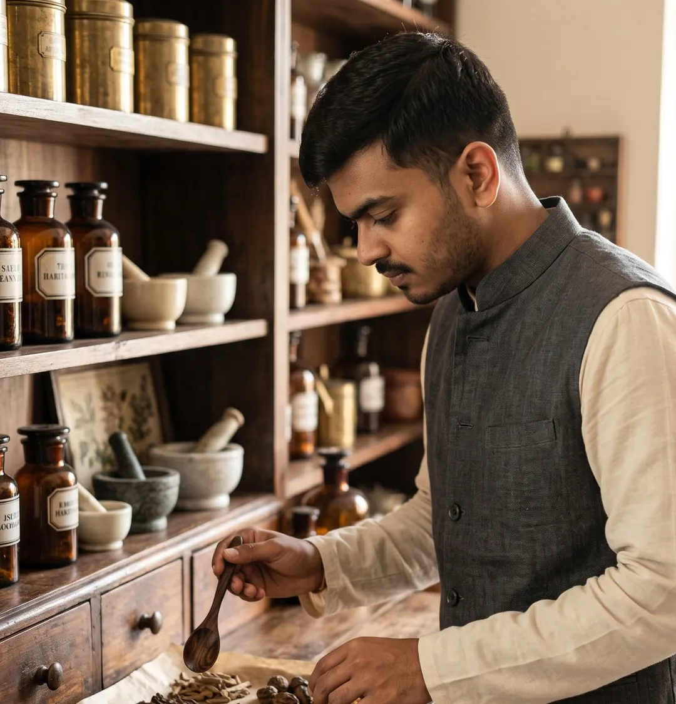

Thalam in Patna

Of all the head therapies in Ayurveda, Thalam is the smallest. There is no stream of oil as in shirodhara, no leather cap as in shiro basti and no vigorous massage. A therapist places a little herbal paste on one point at the top of your head, the area Ayurveda calls the crown or murdha, and you sit quietly while it does its work. Many first-time patients at our Patna centre are surprised that something so simple is a recognised therapy at all.
This page explains what Thalam is, where it comes from, how it is classically understood and what modern research can and cannot say about it, who may benefit, who should avoid it and how it is done at Sabka Ved Wellness.
What is Thalam?
Thalam (sometimes written talam) is a Malayalam term, usually translated as the crown of the head or the "seat" on the top of the head. In practice it names the procedure: a medicated paste, made by mixing a herbal powder with a medicated oil, is pressed gently onto the vertex, roughly where the soft spot (fontanelle) is in an infant, and left in place for a fixed time before being removed.
The paste is small, typically a coin-sized mound, and the choice of powder and oil depends on what the doctor wants to achieve. Cooling oils and powders are chosen when the aim is to settle heat and irritability; warming ones when the problem is more about dryness, coldness and restlessness of vata.
Origins: classical roots and Kerala practice
The great compendia of Ayurveda describe the head as the root of the body. Charaka Samhita compares a person to an inverted tree whose roots lie in the head, and gives great importance to murdha taila, the application of oil to the head. Ashtanga Hridaya, compiled by Vagbhata around the 7th century CE, lists four kinds of murdha taila in rising order of strength: shiro abhyanga (oil massage), shiro parisheka or seka (pouring), shiro pichu (oil-soaked cloth) and shiro basti (oil pooled within a cap).
Thalam itself is not named in these Sanskrit classics. It belongs to the Kerala tradition of Ayurveda, where families of vaidyas developed and refined many head and body therapies over centuries and recorded them in regional texts and practice manuals. The exact date of its origin is not documented, so it is honest to say that Thalam is a long-standing regional practice built on the classical idea of murdha taila, rather than a procedure described by Charaka or Sushruta themselves. Like pizhichil and navara kizhi, it became widely known outside Kerala mainly during the 20th century as Kerala-style Ayurveda spread across India.
How Thalam is understood to work
The classical view
Ayurveda treats the crown as an important marma region (vital point) and a seat of prana. The texts say that oil applied to the head nourishes the senses, supports sleep, steadies the mind and protects against dryness and premature greying. Thalam concentrates this effect on a single point and lets the medicine remain in contact with the scalp for longer than a passing massage would.
When vata is aggravated, people often describe light, broken sleep, racing thoughts, dryness and headaches that worsen with travel or irregular routine. When pitta is aggravated, they describe heat in the head, burning eyes, irritability and sleep that is hard to fall into. Thalam with suitable medicines is used to calm both patterns.
What modern research has and has not shown
There is very little modern research on Thalam as a standalone procedure. Reviews of Ayurvedic approaches to insomnia, including a 2026 narrative review in the Journal of Clinical Medicine and a 2026 systematic review on elderly patients, discuss head therapies such as shirodhara and shiro pichu alongside internal medicines, but they also note that most studies are small and of limited quality. We could not find a controlled trial of Thalam alone. So we describe it as a traditional supportive therapy that is pleasant and generally low risk when properly screened, not as a proven treatment for any condition.
Who may Thalam suit?
After assessment, the doctor may consider Thalam for people who experience:
- Difficulty falling asleep or light, disturbed sleep
- Mental strain, overthinking or exam and work stress
- A sense of heat or heaviness in the head
- Headaches linked with stress or poor sleep, once other causes have been ruled out
- Dryness of the scalp, as part of a wider plan
- Recovery phases of Panchakarma, when a gentle calming therapy is wanted
Thalam is often used alongside shiro abhyanga, takra dhara or internal medicines rather than on its own.
Who should avoid Thalam or wait
- People with an acute cold, blocked sinuses, fever or a fresh cough, since medicines on the head can increase heaviness and congestion
- Anyone with scalp wounds, infection, active eczema or psoriasis on the crown, or recent head surgery
- People with sudden severe headache, head injury, fainting, vision changes or neurological symptoms, who need urgent medical evaluation first
- Those with known allergy to any ingredient in the paste
- Pregnant women may receive gentle head therapies in some cases, but only after the doctor has reviewed the medicines used
Thalam does not replace treatment for depression, anxiety disorders, migraine or any neurological condition. Please continue the medicines your doctors have prescribed.
What happens at Sabka Ved Wellness
Consultation first
Every head therapy at our centre begins with a consultation with Dr. Aditya Kunal, BAMS. He asks about your sleep pattern, stress, digestion, headaches, sinus history and medicines, and checks whether the timing is right. Thalam is often part of a broader plan that addresses digestion and routine, because in Ayurveda poor sleep and a disturbed gut are closely connected.
Preparation
The paste is prepared fresh for each session by mixing the chosen herbal powder with warm medicated oil until it reaches a smooth, mouldable consistency. You sit comfortably on a chair or stool. A light oil may first be applied to the scalp, and the hair at the crown is parted so that the paste can sit directly on the skin.
The session, for understanding
- The therapist places the paste on the crown and presses it lightly into a small round mound.
- The area may be covered with a leaf or cloth to keep it in place and stop it drying too quickly.
- You remain seated quietly with eyes closed for the time the doctor has set, commonly around 20 to 45 minutes.
- The paste is then lifted off, and the scalp is wiped clean.
- You rest for a short time before leaving.
This description is for understanding only. Thalam medicines are chosen for each person, and applying random pastes or oils at home is not the same treatment.
Aftercare and diet
Avoid washing your hair with cold water immediately afterwards, and stay away from strong wind, fans blowing directly on your head and late nights on treatment days. Warm, light meals such as khichdi, dal and seasonal vegetables are preferred. Many patients find that sleeping a little earlier on Thalam days helps.
Why Thalam costs what it costs
Thalam is one of the lighter procedures, but it still has real costs: classical medicated oils and powders from licensed manufacturers, fresh paste prepared for each session, therapist time for preparation, the session itself and cleaning, single-patient linen and doctor oversight of the plan. When it is combined with other head therapies, the programme is planned so that you are not paying for procedures you do not need. We do not publish fixed prices because plans vary; you will know what is included before you start.
Thalam and related therapies
| Therapy | How the medicine is applied | Typical intensity |
|---|---|---|
| Shiro abhyanga | Oil massaged into scalp | Mild |
| Thalam | Paste held on the crown | Mild, focused |
| Thalapothichil | Herbal paste covering the whole scalp | Moderate, cooling |
| Shiro pichu | Oil-soaked cloth on the head | Moderate |
| Shiro basti | Oil pooled within a cap | Strongest |
Book a consultation
If you are struggling with sleep, mental strain or heat in the head and want to know whether Thalam or another head therapy suits you, start with a consultation. Request a slot through our appointment page or book online at superprofile.bio/bookings/dradityakunal.
Sources
We also serve patients from


Preparation, therapy, recovery. In that order.


Related therapies
Pages that pair naturally with this one.


Questions about Thalam

Thalam is a Kerala Ayurvedic therapy in which a small mound of herbal powder mixed with medicated oil is placed on the crown of the head and left for a set time. It is used as a calming support for sleep and mental strain.
No. The classics describe oil therapies for the head, such as shiro abhyanga and shiro basti. Thalam is a later Kerala practice built on those principles, and its exact date of origin is not documented.
No therapy can honestly promise that. Thalam is used as a supportive therapy for sleep, and research on it is very limited. It works best as part of a plan that also addresses routine and digestion.
Usually around 20 to 45 minutes, and courses are commonly 7 to 14 sessions. The doctor decides after assessment.
It is usually postponed during colds, sinus congestion or fever, because head therapies can increase heaviness and congestion.